Fiches Sciences et santé
44 fiches d'exercices en français sur le thème « Sciences et santé » : texte à trous, compréhension orale et mots mêlés, à imprimer (PDF) avec corrigé.
44 ressources
Niveau
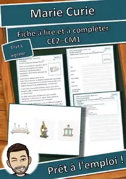
Atelier des personnages: Marie Curie – Fiche à lire et à compléter (GRATUIT)
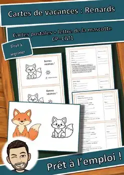
Cartes de vacances Renard : mascotte de classe, 3 niveaux | Français
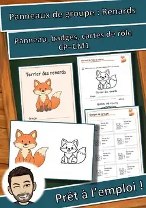
Panneaux de groupe Renard : mascotte de classe, cartes de rôle | Français
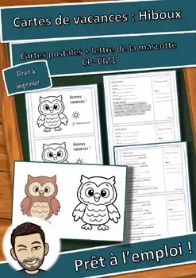
Cartes de vacances Hibou : mascotte de classe, 3 niveaux | Français
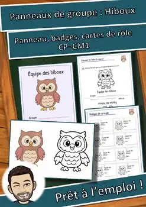
Panneaux de groupe Hibou : mascotte de classe, cartes de rôle | Français
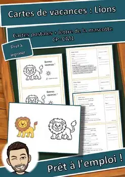
Cartes de vacances Lion : mascotte de classe, 3 niveaux | Français
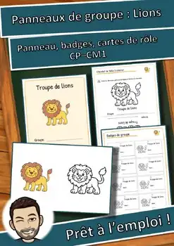
Panneaux de groupe Lion : mascotte de classe, cartes de rôle | Français
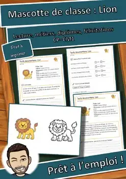
Pack mascotte de classe Lion : texte, métiers, félicitations | Français
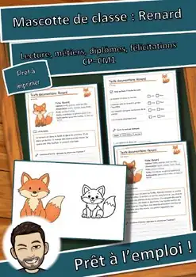
Pack mascotte de classe Renard : texte, métiers, félicitations | Français
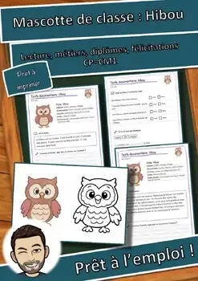
Pack mascotte de classe Hibou : texte, métiers, félicitations | Français
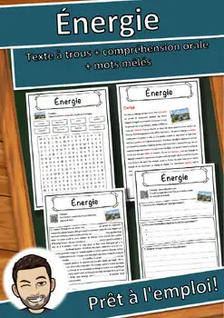
Énergie – Fiche de lecture : texte à trous, compréhension orale et mots mêlés
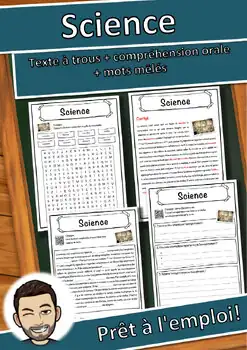
Science – Fiche de lecture : texte à trous, compréhension orale et mots mêlés
Médecin – Fiche de lecture : texte à trous, compréhension orale et mots mêlés
Science de la nature – Fiche CM1-CM2 : texte à trous, compréhension orale et mots mêlés
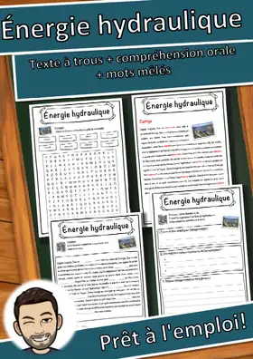
Énergie hydraulique – Fiche : texte à trous, compréhension orale et mots mêlés
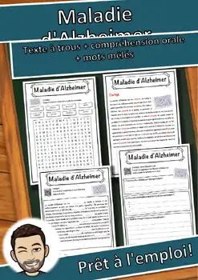
Maladie d'Alzheimer – Texte à trous, compréhension orale et mots mêlés
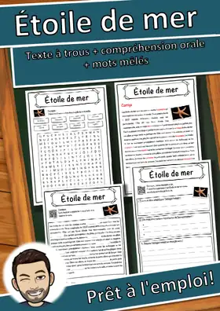
Étoile de mer – Fiche : texte à trous, compréhension orale et mots mêlés
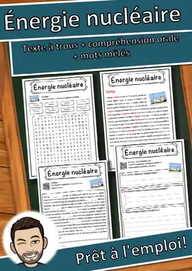
Énergie nucléaire – Fiche : texte à trous, compréhension orale et mots mêlés
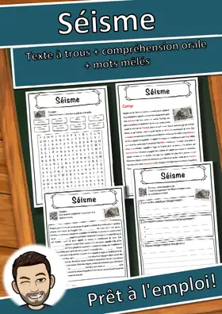
Séisme – Fiche : texte à trous, compréhension orale et mots mêlés
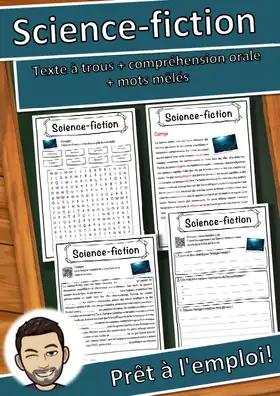
Science-fiction – Fiche : texte à trous, compréhension orale et mots mêlés
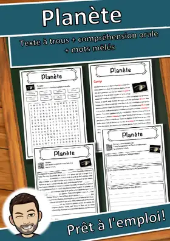
Planète – Fiche : texte à trous, compréhension orale et mots mêlés
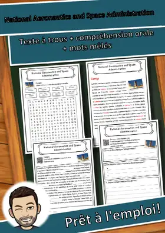
National Aeronautics and Space Administration – Fiche : texte à trous, compréhension orale et mots mêlés
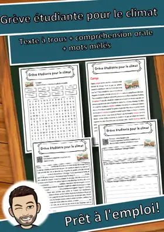
Grève étudiante pour le climat – Fiche : texte à trous, compréhension orale et mots mêlés
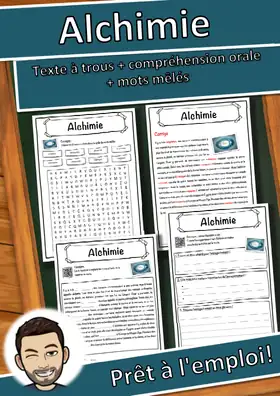
Alchimie – Fiche : texte à trous, compréhension orale et mots mêlés
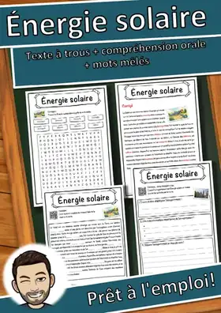
Énergie solaire – Fiche : texte à trous, compréhension orale et mots mêlés
Science de la nature – Fiche : texte à trous, compréhension orale et mots mêlés
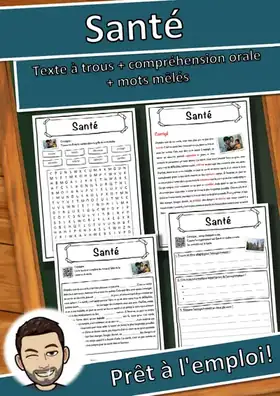
Santé – Fiche : texte à trous, compréhension orale et mots mêlés
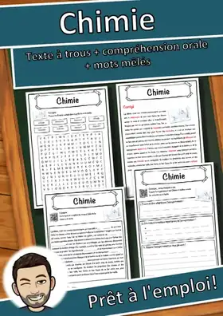
Chimie – Fiche : texte à trous, compréhension orale et mots mêlés
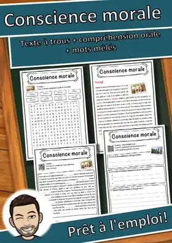
Conscience morale – Fiche : texte à trous, compréhension orale et mots mêlés
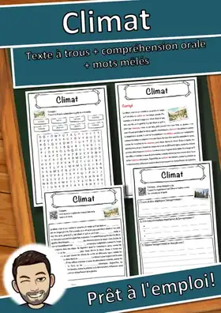
Climat – Fiche : texte à trous, compréhension orale et mots mêlés
Maladie infantile – Fiche : texte à trous, compréhension orale et mots mêlés
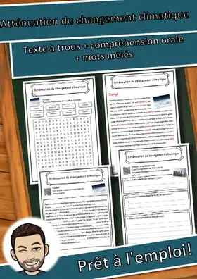
Atténuation du changement climatique – Fiche : texte à trous, compréhension orale et mots mêlés
Énergie renouvelable – Fiche : texte à trous, compréhension orale et mots mêlés
Chemin de fer – Fiche : texte à trous, compréhension orale et mots mêlés
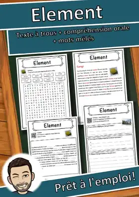
Element – Fiche : texte à trous, compréhension orale et mots mêlés
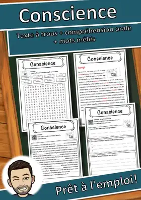
Conscience – Fiche : texte à trous, compréhension orale et mots mêlés
Éruption volcanique – Fiche : texte à trous, compréhension orale et mots mêlés
Volcan – Fiche : texte à trous, compréhension orale et mots mêlés
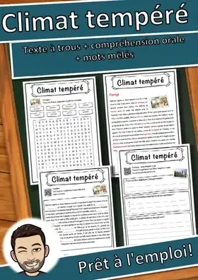
Climat tempéré – Fiche : texte à trous, compréhension orale et mots mêlés
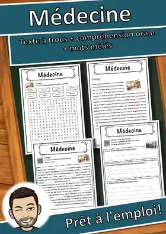
Médecine – Fiche : texte à trous, compréhension orale et mots mêlés
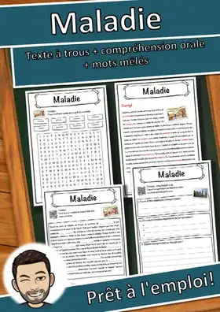
Maladie – Fiche : texte à trous, compréhension orale et mots mêlés
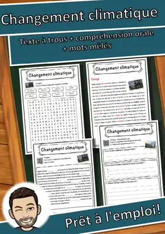
Changement climatique – Fiche : texte à trous, compréhension orale et mots mêlés
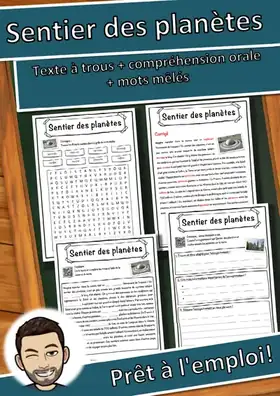
Sentier des planètes – Fiche : texte à trous, compréhension orale et mots mêlés
Espace et planètes à colorier et bricoler : système solaire, CE1–CM1
Espace et planètes à colorier et bricoler : système solaire, CE1–CM1
Aucune ressource trouvée – essaie un autre mot ou un autre filtre.